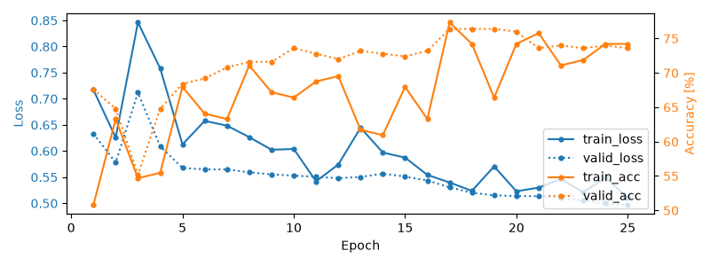
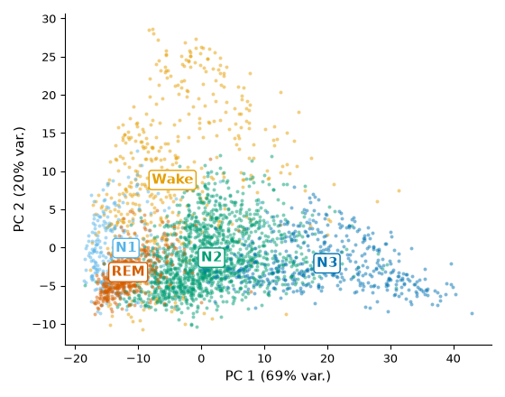

Note
Go to the end to download the full example code.
Self-supervised learning on EEG with relative positioning#
This example shows how to train a neural network with self-supervision on sleep EEG data. We follow the relative positioning approach of [1] on the openly accessible Sleep Physionet dataset [2] [3].
Here, we use relative positioning (RP) as our pretext task, and perform sleep staging as our downstream task. RP is a simple SSL task, in which a neural network is trained to predict whether two randomly sampled EEG windows are close or far apart in time. This method was shown to yield physiologically- and clinically-relevant features and to boost classification performance in low-labels data regimes [1].
# Authors: Hubert Banville <hubert.jbanville@gmail.com>
#
# License: BSD (3-clause)
random_state = 87
n_jobs = 1
Loading and preprocessing the dataset#
Loading the raw recordings#
First, we load a few recordings from the Sleep Physionet dataset. Running this example with more recordings should yield better representations and downstream classification performance.
from braindecode.datasets.sleep_physionet import SleepPhysionet
dataset = SleepPhysionet(subject_ids=[0, 1, 2], recording_ids=[1], crop_wake_mins=30)
Downloading data from 'https://physionet.org/physiobank/database/sleep-edfx/sleep-cassette//SC4021E0-PSG.edf' to file '/home/runner/mne_data/physionet-sleep-data/SC4021E0-PSG.edf'.
0%| | 0.00/51.1M [00:00<?, ?B/s]
0%| | 50.2k/51.1M [00:00<04:20, 196kB/s]
0%|▏ | 165k/51.1M [00:00<01:37, 524kB/s]
0%|▏ | 237k/51.1M [00:00<01:40, 506kB/s]
1%|▎ | 345k/51.1M [00:00<01:20, 632kB/s]
1%|▎ | 427k/51.1M [00:00<01:17, 654kB/s]
1%|▍ | 499k/51.1M [00:00<01:19, 638kB/s]
1%|▍ | 566k/51.1M [00:00<01:19, 633kB/s]
1%|▍ | 633k/51.1M [00:01<01:23, 606kB/s]
1%|▌ | 695k/51.1M [00:01<01:26, 584kB/s]
1%|▌ | 756k/51.1M [00:01<01:35, 528kB/s]
2%|▌ | 810k/51.1M [00:01<01:36, 522kB/s]
2%|▋ | 863k/51.1M [00:01<01:50, 455kB/s]
2%|▋ | 919k/51.1M [00:01<01:48, 463kB/s]
2%|▋ | 968k/51.1M [00:01<01:50, 456kB/s]
2%|▊ | 1.03M/51.1M [00:01<01:41, 492kB/s]
2%|▊ | 1.08M/51.1M [00:02<01:44, 481kB/s]
2%|▊ | 1.15M/51.1M [00:02<01:38, 509kB/s]
2%|▉ | 1.21M/51.1M [00:02<01:31, 546kB/s]
3%|▉ | 1.30M/51.1M [00:02<01:24, 589kB/s]
3%|█ | 1.38M/51.1M [00:02<01:20, 615kB/s]
3%|█ | 1.46M/51.1M [00:02<01:25, 578kB/s]
3%|█▏ | 1.56M/51.1M [00:02<01:14, 663kB/s]
3%|█▏ | 1.63M/51.1M [00:02<01:15, 656kB/s]
3%|█▎ | 1.70M/51.1M [00:03<01:16, 649kB/s]
3%|█▎ | 1.79M/51.1M [00:03<01:14, 665kB/s]
4%|█▍ | 1.85M/51.1M [00:03<01:15, 651kB/s]
4%|█▍ | 1.93M/51.1M [00:03<01:15, 650kB/s]
4%|█▍ | 2.00M/51.1M [00:03<01:18, 625kB/s]
4%|█▌ | 2.08M/51.1M [00:03<01:18, 628kB/s]
4%|█▌ | 2.15M/51.1M [00:03<01:23, 586kB/s]
4%|█▋ | 2.21M/51.1M [00:03<01:23, 584kB/s]
4%|█▋ | 2.28M/51.1M [00:03<01:24, 580kB/s]
5%|█▋ | 2.34M/51.1M [00:04<01:25, 571kB/s]
5%|█▊ | 2.40M/51.1M [00:04<01:26, 566kB/s]
5%|█▊ | 2.46M/51.1M [00:04<01:34, 516kB/s]
5%|█▉ | 2.52M/51.1M [00:04<01:32, 525kB/s]
5%|█▉ | 2.59M/51.1M [00:04<01:29, 541kB/s]
5%|█▉ | 2.66M/51.1M [00:04<01:29, 543kB/s]
5%|██ | 2.72M/51.1M [00:04<01:24, 571kB/s]
5%|██ | 2.79M/51.1M [00:04<01:32, 525kB/s]
6%|██▏ | 2.87M/51.1M [00:05<01:20, 597kB/s]
6%|██▏ | 2.93M/51.1M [00:05<01:23, 574kB/s]
6%|██▏ | 3.00M/51.1M [00:05<01:22, 583kB/s]
6%|██▎ | 3.06M/51.1M [00:05<01:26, 558kB/s]
6%|██▎ | 3.13M/51.1M [00:05<01:28, 544kB/s]
6%|██▎ | 3.19M/51.1M [00:05<01:28, 542kB/s]
6%|██▍ | 3.24M/51.1M [00:05<01:28, 542kB/s]
6%|██▍ | 3.30M/51.1M [00:05<01:32, 519kB/s]
7%|██▍ | 3.35M/51.1M [00:05<01:34, 505kB/s]
7%|██▌ | 3.40M/51.1M [00:06<01:34, 504kB/s]
7%|██▌ | 3.45M/51.1M [00:06<01:34, 504kB/s]
7%|██▌ | 3.51M/51.1M [00:06<01:37, 487kB/s]
7%|██▋ | 3.57M/51.1M [00:06<01:32, 516kB/s]
7%|██▋ | 3.64M/51.1M [00:06<01:28, 540kB/s]
7%|██▋ | 3.69M/51.1M [00:06<01:39, 476kB/s]
7%|██▊ | 3.77M/51.1M [00:06<01:28, 537kB/s]
7%|██▊ | 3.83M/51.1M [00:06<01:28, 534kB/s]
8%|██▉ | 3.90M/51.1M [00:07<01:27, 542kB/s]
8%|██▉ | 3.97M/51.1M [00:07<01:27, 541kB/s]
8%|██▉ | 4.03M/51.1M [00:07<01:35, 496kB/s]
8%|███ | 4.11M/51.1M [00:07<01:23, 565kB/s]
8%|███ | 4.18M/51.1M [00:07<01:23, 563kB/s]
8%|███▏ | 4.24M/51.1M [00:07<01:22, 569kB/s]
8%|███▏ | 4.31M/51.1M [00:07<01:23, 562kB/s]
9%|███▏ | 4.37M/51.1M [00:07<01:23, 557kB/s]
9%|███▎ | 4.42M/51.1M [00:07<01:25, 549kB/s]
9%|███▎ | 4.49M/51.1M [00:08<01:25, 544kB/s]
9%|███▍ | 4.56M/51.1M [00:08<01:24, 553kB/s]
9%|███▍ | 4.62M/51.1M [00:08<01:20, 581kB/s]
9%|███▍ | 4.69M/51.1M [00:08<01:17, 598kB/s]
9%|███▌ | 4.75M/51.1M [00:08<01:16, 608kB/s]
9%|███▌ | 4.83M/51.1M [00:08<01:11, 651kB/s]
10%|███▋ | 4.90M/51.1M [00:08<01:18, 591kB/s]
10%|███▋ | 4.98M/51.1M [00:08<01:13, 631kB/s]
10%|███▋ | 5.05M/51.1M [00:08<01:13, 627kB/s]
10%|███▊ | 5.13M/51.1M [00:09<01:12, 637kB/s]
10%|███▊ | 5.19M/51.1M [00:09<01:21, 562kB/s]
10%|███▉ | 5.28M/51.1M [00:09<01:17, 595kB/s]
10%|███▉ | 5.34M/51.1M [00:09<01:17, 591kB/s]
11%|████ | 5.41M/51.1M [00:09<01:15, 606kB/s]
11%|████ | 5.47M/51.1M [00:09<01:14, 614kB/s]
11%|████ | 5.54M/51.1M [00:09<01:13, 623kB/s]
11%|████▏ | 5.62M/51.1M [00:09<01:09, 655kB/s]
11%|████▏ | 5.70M/51.1M [00:10<01:08, 665kB/s]
11%|████▎ | 5.77M/51.1M [00:10<01:10, 648kB/s]
11%|████▎ | 5.84M/51.1M [00:10<01:11, 635kB/s]
12%|████▍ | 5.90M/51.1M [00:10<01:17, 585kB/s]
12%|████▍ | 5.96M/51.1M [00:10<01:19, 569kB/s]
12%|████▍ | 6.02M/51.1M [00:10<01:18, 573kB/s]
12%|████▌ | 6.08M/51.1M [00:10<01:21, 555kB/s]
12%|████▌ | 6.15M/51.1M [00:10<01:19, 565kB/s]
12%|████▌ | 6.21M/51.1M [00:10<01:16, 585kB/s]
12%|████▋ | 6.29M/51.1M [00:11<01:11, 628kB/s]
12%|████▋ | 6.37M/51.1M [00:11<01:08, 656kB/s]
13%|████▊ | 6.44M/51.1M [00:11<01:08, 653kB/s]
13%|████▊ | 6.52M/51.1M [00:11<01:05, 677kB/s]
13%|████▉ | 6.59M/51.1M [00:11<01:06, 673kB/s]
13%|████▉ | 6.67M/51.1M [00:11<01:03, 697kB/s]
13%|█████ | 6.74M/51.1M [00:11<01:10, 626kB/s]
13%|█████ | 6.80M/51.1M [00:11<01:13, 603kB/s]
13%|█████ | 6.87M/51.1M [00:11<01:16, 577kB/s]
14%|█████▏ | 6.93M/51.1M [00:12<01:15, 584kB/s]
14%|█████▏ | 7.00M/51.1M [00:12<01:14, 592kB/s]
14%|█████▎ | 7.08M/51.1M [00:12<01:10, 623kB/s]
14%|█████▎ | 7.16M/51.1M [00:12<01:07, 652kB/s]
14%|█████▍ | 7.24M/51.1M [00:12<01:06, 662kB/s]
14%|█████▍ | 7.32M/51.1M [00:12<01:06, 656kB/s]
14%|█████▍ | 7.39M/51.1M [00:12<01:07, 645kB/s]
15%|█████▌ | 7.47M/51.1M [00:12<01:06, 661kB/s]
15%|█████▌ | 7.55M/51.1M [00:12<01:03, 690kB/s]
15%|█████▋ | 7.64M/51.1M [00:13<01:01, 712kB/s]
15%|█████▋ | 7.72M/51.1M [00:13<00:58, 738kB/s]
15%|█████▊ | 7.82M/51.1M [00:13<00:54, 797kB/s]
15%|█████▊ | 7.90M/51.1M [00:13<00:55, 779kB/s]
16%|█████▉ | 7.98M/51.1M [00:13<00:57, 753kB/s]
16%|█████▉ | 8.06M/51.1M [00:13<00:58, 737kB/s]
16%|██████ | 8.14M/51.1M [00:13<00:59, 727kB/s]
16%|██████ | 8.21M/51.1M [00:13<01:05, 652kB/s]
16%|██████▏ | 8.28M/51.1M [00:14<01:08, 625kB/s]
16%|██████▏ | 8.34M/51.1M [00:14<01:10, 609kB/s]
16%|██████▎ | 8.42M/51.1M [00:14<01:06, 639kB/s]
17%|██████▎ | 8.50M/51.1M [00:14<01:02, 677kB/s]
17%|██████▍ | 8.59M/51.1M [00:14<00:59, 716kB/s]
17%|██████▍ | 8.68M/51.1M [00:14<00:55, 761kB/s]
17%|██████▌ | 8.78M/51.1M [00:14<00:51, 821kB/s]
17%|██████▌ | 8.88M/51.1M [00:14<00:48, 870kB/s]
18%|██████▋ | 9.00M/51.1M [00:14<00:45, 932kB/s]
18%|██████▊ | 9.11M/51.1M [00:14<00:42, 980kB/s]
18%|██████▋ | 9.23M/51.1M [00:15<00:41, 1.02MB/s]
18%|██████▊ | 9.36M/51.1M [00:15<00:38, 1.09MB/s]
19%|██████▊ | 9.49M/51.1M [00:15<00:36, 1.15MB/s]
19%|██████▉ | 9.63M/51.1M [00:15<00:35, 1.18MB/s]
19%|███████ | 9.75M/51.1M [00:15<00:37, 1.09MB/s]
19%|███████▏ | 9.88M/51.1M [00:15<00:36, 1.13MB/s]
20%|███████▏ | 10.0M/51.1M [00:15<00:37, 1.11MB/s]
20%|███████▎ | 10.1M/51.1M [00:15<00:37, 1.11MB/s]
20%|███████▍ | 10.2M/51.1M [00:15<00:38, 1.07MB/s]
20%|███████▋ | 10.3M/51.1M [00:16<00:43, 934kB/s]
20%|███████▊ | 10.4M/51.1M [00:16<00:44, 921kB/s]
21%|███████▊ | 10.5M/51.1M [00:16<00:44, 922kB/s]
21%|███████▉ | 10.6M/51.1M [00:16<00:53, 755kB/s]
21%|███████▉ | 10.7M/51.1M [00:16<00:52, 774kB/s]
21%|████████ | 10.8M/51.1M [00:16<00:54, 744kB/s]
21%|████████ | 10.9M/51.1M [00:16<00:55, 728kB/s]
21%|████████▏ | 11.0M/51.1M [00:16<00:55, 724kB/s]
22%|████████▏ | 11.0M/51.1M [00:17<00:59, 680kB/s]
22%|████████▏ | 11.1M/51.1M [00:17<00:59, 669kB/s]
22%|████████▎ | 11.2M/51.1M [00:17<01:00, 664kB/s]
22%|████████▎ | 11.2M/51.1M [00:17<01:00, 656kB/s]
22%|████████▍ | 11.3M/51.1M [00:17<01:00, 658kB/s]
22%|████████▍ | 11.4M/51.1M [00:17<01:01, 642kB/s]
22%|████████▌ | 11.5M/51.1M [00:17<01:09, 567kB/s]
23%|████████▌ | 11.5M/51.1M [00:17<01:10, 565kB/s]
23%|████████▌ | 11.6M/51.1M [00:18<01:18, 506kB/s]
23%|████████▋ | 11.6M/51.1M [00:18<01:19, 498kB/s]
23%|████████▋ | 11.7M/51.1M [00:18<01:17, 506kB/s]
23%|████████▋ | 11.8M/51.1M [00:18<01:17, 509kB/s]
23%|████████▊ | 11.8M/51.1M [00:18<01:20, 491kB/s]
23%|████████▊ | 11.9M/51.1M [00:18<01:23, 473kB/s]
23%|████████▊ | 11.9M/51.1M [00:18<01:26, 453kB/s]
23%|████████▉ | 12.0M/51.1M [00:18<01:27, 450kB/s]
24%|████████▉ | 12.0M/51.1M [00:19<01:30, 433kB/s]
24%|████████▉ | 12.1M/51.1M [00:19<01:32, 422kB/s]
24%|█████████ | 12.1M/51.1M [00:19<01:37, 399kB/s]
24%|█████████ | 12.2M/51.1M [00:19<01:38, 395kB/s]
24%|█████████ | 12.2M/51.1M [00:19<01:47, 362kB/s]
24%|█████████ | 12.2M/51.1M [00:19<01:45, 369kB/s]
24%|█████████▏ | 12.3M/51.1M [00:19<01:37, 400kB/s]
24%|█████████▏ | 12.3M/51.1M [00:19<01:31, 423kB/s]
24%|█████████▏ | 12.4M/51.1M [00:19<01:22, 468kB/s]
24%|█████████▎ | 12.5M/51.1M [00:20<01:15, 510kB/s]
25%|█████████▎ | 12.6M/51.1M [00:20<01:07, 572kB/s]
25%|█████████▍ | 12.6M/51.1M [00:20<01:00, 633kB/s]
25%|█████████▍ | 12.7M/51.1M [00:20<00:57, 663kB/s]
25%|█████████▍ | 12.8M/51.1M [00:20<01:01, 628kB/s]
25%|█████████▌ | 12.8M/51.1M [00:20<01:00, 631kB/s]
25%|█████████▌ | 12.9M/51.1M [00:20<01:01, 624kB/s]
25%|█████████▋ | 13.0M/51.1M [00:20<00:57, 659kB/s]
26%|█████████▋ | 13.1M/51.1M [00:20<00:57, 668kB/s]
26%|█████████▊ | 13.2M/51.1M [00:21<00:56, 674kB/s]
26%|█████████▊ | 13.2M/51.1M [00:21<00:56, 670kB/s]
26%|█████████▉ | 13.3M/51.1M [00:21<01:00, 631kB/s]
26%|█████████▉ | 13.4M/51.1M [00:21<01:02, 607kB/s]
26%|█████████▉ | 13.4M/51.1M [00:21<01:05, 579kB/s]
26%|██████████ | 13.5M/51.1M [00:21<01:08, 551kB/s]
26%|██████████ | 13.6M/51.1M [00:21<01:08, 548kB/s]
27%|██████████ | 13.6M/51.1M [00:21<01:06, 564kB/s]
27%|██████████▏ | 13.7M/51.1M [00:22<01:05, 573kB/s]
27%|██████████▏ | 13.8M/51.1M [00:22<01:01, 611kB/s]
27%|██████████▎ | 13.8M/51.1M [00:22<00:59, 624kB/s]
27%|██████████▎ | 13.9M/51.1M [00:22<01:10, 526kB/s]
27%|██████████▍ | 14.0M/51.1M [00:22<00:59, 624kB/s]
28%|██████████▍ | 14.1M/51.1M [00:22<00:59, 628kB/s]
28%|██████████▌ | 14.1M/51.1M [00:22<01:08, 537kB/s]
28%|██████████▌ | 14.2M/51.1M [00:22<01:03, 584kB/s]
28%|██████████▌ | 14.3M/51.1M [00:23<01:05, 565kB/s]
28%|██████████▋ | 14.3M/51.1M [00:23<01:04, 571kB/s]
28%|██████████▋ | 14.4M/51.1M [00:23<01:10, 521kB/s]
28%|██████████▋ | 14.5M/51.1M [00:23<01:11, 515kB/s]
28%|██████████▊ | 14.5M/51.1M [00:23<01:11, 515kB/s]
28%|██████████▊ | 14.6M/51.1M [00:23<01:16, 476kB/s]
29%|██████████▊ | 14.6M/51.1M [00:23<01:15, 485kB/s]
29%|██████████▉ | 14.7M/51.1M [00:23<01:13, 499kB/s]
29%|██████████▉ | 14.7M/51.1M [00:24<01:16, 476kB/s]
29%|███████████ | 14.8M/51.1M [00:24<01:14, 486kB/s]
29%|███████████ | 14.9M/51.1M [00:24<01:16, 474kB/s]
29%|███████████ | 14.9M/51.1M [00:24<01:17, 468kB/s]
29%|███████████▏ | 15.0M/51.1M [00:24<01:21, 442kB/s]
29%|███████████▏ | 15.0M/51.1M [00:24<01:23, 435kB/s]
29%|███████████▏ | 15.1M/51.1M [00:24<01:24, 429kB/s]
30%|███████████▏ | 15.1M/51.1M [00:24<01:20, 445kB/s]
30%|███████████▎ | 15.2M/51.1M [00:25<01:19, 454kB/s]
30%|███████████▎ | 15.2M/51.1M [00:25<01:36, 373kB/s]
30%|███████████▎ | 15.3M/51.1M [00:25<01:30, 398kB/s]
30%|███████████▍ | 15.4M/51.1M [00:25<01:34, 380kB/s]
30%|███████████▍ | 15.4M/51.1M [00:25<01:35, 375kB/s]
30%|███████████▍ | 15.4M/51.1M [00:25<01:34, 378kB/s]
30%|███████████▍ | 15.5M/51.1M [00:25<01:46, 335kB/s]
30%|███████████▌ | 15.5M/51.1M [00:25<01:45, 337kB/s]
30%|███████████▌ | 15.6M/51.1M [00:26<01:48, 329kB/s]
30%|███████████▌ | 15.6M/51.1M [00:26<01:47, 329kB/s]
31%|███████████▋ | 15.6M/51.1M [00:26<01:44, 341kB/s]
31%|███████████▋ | 15.7M/51.1M [00:26<01:40, 354kB/s]
31%|███████████▋ | 15.7M/51.1M [00:26<01:39, 354kB/s]
31%|███████████▋ | 15.8M/51.1M [00:26<01:44, 340kB/s]
31%|███████████▋ | 15.8M/51.1M [00:26<01:39, 354kB/s]
31%|███████████▊ | 15.9M/51.1M [00:26<01:35, 371kB/s]
31%|███████████▊ | 15.9M/51.1M [00:27<01:31, 385kB/s]
31%|███████████▊ | 16.0M/51.1M [00:27<01:22, 428kB/s]
31%|███████████▉ | 16.0M/51.1M [00:27<01:16, 461kB/s]
31%|███████████▉ | 16.1M/51.1M [00:27<01:26, 406kB/s]
32%|████████████ | 16.2M/51.1M [00:27<01:20, 434kB/s]
32%|████████████ | 16.2M/51.1M [00:27<01:21, 431kB/s]
32%|████████████ | 16.2M/51.1M [00:27<01:27, 397kB/s]
32%|████████████ | 16.3M/51.1M [00:27<01:29, 390kB/s]
32%|████████████▏ | 16.3M/51.1M [00:28<01:28, 396kB/s]
32%|████████████▏ | 16.4M/51.1M [00:28<01:28, 391kB/s]
32%|████████████▏ | 16.4M/51.1M [00:28<01:29, 388kB/s]
32%|████████████▏ | 16.5M/51.1M [00:28<01:27, 398kB/s]
32%|████████████▎ | 16.5M/51.1M [00:28<01:25, 404kB/s]
32%|████████████▎ | 16.6M/51.1M [00:28<01:24, 409kB/s]
33%|████████████▎ | 16.6M/51.1M [00:28<01:25, 405kB/s]
33%|████████████▍ | 16.7M/51.1M [00:28<01:25, 404kB/s]
33%|████████████▍ | 16.7M/51.1M [00:29<01:23, 413kB/s]
33%|████████████▍ | 16.8M/51.1M [00:29<01:16, 447kB/s]
33%|████████████▌ | 16.9M/51.1M [00:29<01:13, 468kB/s]
33%|████████████▌ | 16.9M/51.1M [00:29<01:07, 510kB/s]
33%|████████████▌ | 17.0M/51.1M [00:29<01:15, 452kB/s]
33%|████████████▋ | 17.1M/51.1M [00:29<01:08, 496kB/s]
33%|████████████▋ | 17.1M/51.1M [00:29<01:12, 471kB/s]
34%|████████████▊ | 17.2M/51.1M [00:29<01:15, 447kB/s]
34%|████████████▊ | 17.2M/51.1M [00:30<01:15, 452kB/s]
34%|████████████▊ | 17.3M/51.1M [00:30<01:11, 472kB/s]
34%|████████████▉ | 17.4M/51.1M [00:30<01:07, 501kB/s]
34%|████████████▉ | 17.4M/51.1M [00:30<01:02, 543kB/s]
34%|█████████████ | 17.5M/51.1M [00:30<01:01, 545kB/s]
34%|█████████████ | 17.6M/51.1M [00:30<00:56, 590kB/s]
35%|█████████████ | 17.7M/51.1M [00:30<00:54, 619kB/s]
35%|█████████████▏ | 17.7M/51.1M [00:30<00:52, 631kB/s]
35%|█████████████▏ | 17.8M/51.1M [00:31<00:51, 645kB/s]
35%|█████████████▎ | 17.9M/51.1M [00:31<00:51, 651kB/s]
35%|█████████████▎ | 18.0M/51.1M [00:31<00:51, 639kB/s]
35%|█████████████▍ | 18.1M/51.1M [00:31<00:50, 654kB/s]
35%|█████████████▍ | 18.1M/51.1M [00:31<00:50, 650kB/s]
36%|█████████████▌ | 18.2M/51.1M [00:31<00:52, 624kB/s]
36%|█████████████▌ | 18.3M/51.1M [00:31<00:49, 660kB/s]
36%|█████████████▋ | 18.4M/51.1M [00:31<00:49, 657kB/s]
36%|█████████████▋ | 18.4M/51.1M [00:31<00:51, 634kB/s]
36%|█████████████▋ | 18.5M/51.1M [00:32<00:53, 612kB/s]
36%|█████████████▊ | 18.5M/51.1M [00:32<00:56, 573kB/s]
36%|█████████████▊ | 18.6M/51.1M [00:32<01:02, 523kB/s]
36%|█████████████▊ | 18.7M/51.1M [00:32<01:02, 519kB/s]
37%|█████████████▉ | 18.7M/51.1M [00:32<01:04, 500kB/s]
37%|█████████████▉ | 18.8M/51.1M [00:32<01:04, 499kB/s]
37%|█████████████▉ | 18.8M/51.1M [00:32<01:03, 511kB/s]
37%|██████████████ | 18.9M/51.1M [00:32<01:00, 533kB/s]
37%|██████████████ | 19.0M/51.1M [00:33<01:08, 473kB/s]
37%|██████████████ | 19.0M/51.1M [00:33<01:12, 444kB/s]
37%|██████████████▏ | 19.1M/51.1M [00:33<01:20, 400kB/s]
37%|██████████████▏ | 19.1M/51.1M [00:33<01:18, 406kB/s]
37%|██████████████▏ | 19.2M/51.1M [00:33<01:17, 415kB/s]
38%|██████████████▎ | 19.2M/51.1M [00:33<01:11, 445kB/s]
38%|██████████████▎ | 19.3M/51.1M [00:33<01:07, 469kB/s]
38%|██████████████▎ | 19.3M/51.1M [00:33<01:13, 431kB/s]
38%|██████████████▍ | 19.4M/51.1M [00:34<01:14, 428kB/s]
38%|██████████████▍ | 19.4M/51.1M [00:34<01:13, 434kB/s]
38%|██████████████▍ | 19.5M/51.1M [00:34<01:09, 454kB/s]
38%|██████████████▌ | 19.6M/51.1M [00:34<01:05, 479kB/s]
38%|██████████████▌ | 19.6M/51.1M [00:34<01:05, 480kB/s]
38%|██████████████▌ | 19.7M/51.1M [00:34<01:01, 513kB/s]
39%|██████████████▋ | 19.7M/51.1M [00:34<01:09, 450kB/s]
39%|██████████████▋ | 19.8M/51.1M [00:34<01:08, 454kB/s]
39%|██████████████▋ | 19.8M/51.1M [00:35<01:13, 424kB/s]
39%|██████████████▊ | 19.9M/51.1M [00:35<01:14, 420kB/s]
39%|██████████████▊ | 19.9M/51.1M [00:35<01:14, 419kB/s]
39%|██████████████▊ | 20.0M/51.1M [00:35<01:11, 434kB/s]
39%|██████████████▉ | 20.0M/51.1M [00:35<01:11, 435kB/s]
39%|██████████████▉ | 20.1M/51.1M [00:35<01:10, 439kB/s]
39%|██████████████▉ | 20.2M/51.1M [00:35<01:10, 439kB/s]
39%|███████████████ | 20.2M/51.1M [00:35<01:13, 421kB/s]
40%|███████████████ | 20.3M/51.1M [00:36<01:14, 413kB/s]
40%|███████████████ | 20.3M/51.1M [00:36<01:18, 391kB/s]
40%|███████████████ | 20.3M/51.1M [00:36<01:15, 407kB/s]
40%|███████████████▏ | 20.4M/51.1M [00:36<01:13, 417kB/s]
40%|███████████████▏ | 20.4M/51.1M [00:36<01:10, 435kB/s]
40%|███████████████▏ | 20.5M/51.1M [00:36<01:10, 433kB/s]
40%|███████████████▎ | 20.5M/51.1M [00:36<01:10, 434kB/s]
40%|███████████████▎ | 20.6M/51.1M [00:36<01:12, 424kB/s]
40%|███████████████▎ | 20.6M/51.1M [00:36<01:14, 408kB/s]
40%|███████████████▎ | 20.7M/51.1M [00:37<01:12, 422kB/s]
41%|███████████████▍ | 20.7M/51.1M [00:37<01:10, 432kB/s]
41%|███████████████▍ | 20.8M/51.1M [00:37<01:13, 414kB/s]
41%|███████████████▍ | 20.8M/51.1M [00:37<01:13, 414kB/s]
41%|███████████████▍ | 20.9M/51.1M [00:37<01:22, 368kB/s]
41%|███████████████▌ | 20.9M/51.1M [00:37<01:25, 353kB/s]
41%|███████████████▌ | 21.0M/51.1M [00:37<01:24, 356kB/s]
41%|███████████████▌ | 21.0M/51.1M [00:37<01:20, 372kB/s]
41%|███████████████▋ | 21.0M/51.1M [00:38<01:26, 347kB/s]
41%|███████████████▋ | 21.1M/51.1M [00:38<01:20, 372kB/s]
41%|███████████████▋ | 21.2M/51.1M [00:38<01:18, 381kB/s]
41%|███████████████▊ | 21.2M/51.1M [00:38<01:14, 400kB/s]
42%|███████████████▊ | 21.3M/51.1M [00:38<01:10, 423kB/s]
42%|███████████████▊ | 21.3M/51.1M [00:38<01:03, 467kB/s]
42%|███████████████▉ | 21.4M/51.1M [00:38<00:57, 515kB/s]
42%|███████████████▉ | 21.4M/51.1M [00:38<00:55, 532kB/s]
42%|███████████████▉ | 21.5M/51.1M [00:39<00:59, 500kB/s]
42%|████████████████ | 21.6M/51.1M [00:39<00:56, 525kB/s]
42%|████████████████ | 21.6M/51.1M [00:39<00:54, 546kB/s]
42%|████████████████ | 21.7M/51.1M [00:39<00:52, 563kB/s]
43%|████████████████▏ | 21.8M/51.1M [00:39<00:50, 587kB/s]
43%|████████████████▏ | 21.9M/51.1M [00:39<00:47, 621kB/s]
43%|████████████████▎ | 21.9M/51.1M [00:39<00:52, 554kB/s]
43%|████████████████▎ | 22.0M/51.1M [00:39<00:45, 634kB/s]
43%|████████████████▍ | 22.1M/51.1M [00:39<00:46, 620kB/s]
43%|████████████████▍ | 22.2M/51.1M [00:40<00:50, 579kB/s]
43%|████████████████▌ | 22.2M/51.1M [00:40<00:51, 560kB/s]
44%|████████████████▌ | 22.3M/51.1M [00:40<00:51, 560kB/s]
44%|████████████████▌ | 22.3M/51.1M [00:40<00:56, 507kB/s]
44%|████████████████▋ | 22.4M/51.1M [00:40<00:55, 522kB/s]
44%|████████████████▋ | 22.5M/51.1M [00:40<00:53, 535kB/s]
44%|████████████████▊ | 22.5M/51.1M [00:40<00:49, 579kB/s]
44%|████████████████▊ | 22.6M/51.1M [00:40<00:47, 604kB/s]
44%|████████████████▊ | 22.7M/51.1M [00:41<00:44, 640kB/s]
45%|████████████████▉ | 22.8M/51.1M [00:41<00:44, 644kB/s]
45%|████████████████▉ | 22.9M/51.1M [00:41<00:43, 652kB/s]
45%|█████████████████ | 22.9M/51.1M [00:41<00:51, 549kB/s]
45%|█████████████████ | 23.0M/51.1M [00:41<00:47, 598kB/s]
45%|█████████████████▏ | 23.1M/51.1M [00:41<00:48, 573kB/s]
45%|█████████████████▏ | 23.2M/51.1M [00:41<00:49, 561kB/s]
45%|█████████████████▏ | 23.2M/51.1M [00:41<00:49, 566kB/s]
46%|█████████████████▎ | 23.3M/51.1M [00:42<00:52, 528kB/s]
46%|█████████████████▎ | 23.4M/51.1M [00:42<00:48, 574kB/s]
46%|█████████████████▍ | 23.4M/51.1M [00:42<00:49, 561kB/s]
46%|█████████████████▍ | 23.5M/51.1M [00:42<00:49, 558kB/s]
46%|█████████████████▌ | 23.6M/51.1M [00:42<00:49, 557kB/s]
46%|█████████████████▌ | 23.6M/51.1M [00:42<00:46, 593kB/s]
46%|█████████████████▌ | 23.7M/51.1M [00:42<00:45, 602kB/s]
47%|█████████████████▋ | 23.8M/51.1M [00:42<00:43, 623kB/s]
47%|█████████████████▋ | 23.9M/51.1M [00:43<00:43, 628kB/s]
47%|█████████████████▊ | 23.9M/51.1M [00:43<00:44, 613kB/s]
47%|█████████████████▊ | 24.0M/51.1M [00:43<00:42, 633kB/s]
47%|█████████████████▉ | 24.1M/51.1M [00:43<00:41, 648kB/s]
47%|█████████████████▉ | 24.2M/51.1M [00:43<00:42, 639kB/s]
47%|██████████████████ | 24.2M/51.1M [00:43<00:43, 612kB/s]
48%|██████████████████ | 24.3M/51.1M [00:43<00:46, 581kB/s]
48%|██████████████████ | 24.4M/51.1M [00:43<00:46, 582kB/s]
48%|██████████████████▏ | 24.4M/51.1M [00:43<00:45, 589kB/s]
48%|██████████████████▏ | 24.5M/51.1M [00:44<00:43, 613kB/s]
48%|██████████████████▎ | 24.6M/51.1M [00:44<00:42, 620kB/s]
48%|██████████████████▎ | 24.6M/51.1M [00:44<00:43, 609kB/s]
48%|██████████████████▎ | 24.7M/51.1M [00:44<00:42, 616kB/s]
48%|██████████████████▍ | 24.8M/51.1M [00:44<00:43, 612kB/s]
49%|██████████████████▍ | 24.8M/51.1M [00:44<00:49, 534kB/s]
49%|██████████████████▌ | 24.9M/51.1M [00:44<00:43, 598kB/s]
49%|██████████████████▌ | 25.0M/51.1M [00:44<00:44, 594kB/s]
49%|██████████████████▌ | 25.1M/51.1M [00:45<00:43, 601kB/s]
49%|██████████████████▋ | 25.1M/51.1M [00:45<00:42, 612kB/s]
49%|██████████████████▋ | 25.2M/51.1M [00:45<00:40, 646kB/s]
49%|██████████████████▊ | 25.3M/51.1M [00:45<00:38, 675kB/s]
50%|██████████████████▊ | 25.4M/51.1M [00:45<00:38, 670kB/s]
50%|██████████████████▉ | 25.4M/51.1M [00:45<00:39, 657kB/s]
50%|██████████████████▉ | 25.5M/51.1M [00:45<00:42, 600kB/s]
50%|██████████████████▉ | 25.6M/51.1M [00:45<00:43, 591kB/s]
50%|███████████████████ | 25.6M/51.1M [00:45<00:47, 543kB/s]
50%|███████████████████ | 25.7M/51.1M [00:46<00:49, 516kB/s]
50%|███████████████████ | 25.7M/51.1M [00:46<00:46, 543kB/s]
50%|███████████████████▏ | 25.8M/51.1M [00:46<00:42, 597kB/s]
51%|███████████████████▏ | 25.9M/51.1M [00:46<00:40, 624kB/s]
51%|███████████████████▎ | 26.0M/51.1M [00:46<00:38, 647kB/s]
51%|███████████████████▎ | 26.1M/51.1M [00:46<00:38, 646kB/s]
51%|███████████████████▍ | 26.1M/51.1M [00:46<00:39, 634kB/s]
51%|███████████████████▍ | 26.2M/51.1M [00:46<00:39, 631kB/s]
51%|███████████████████▌ | 26.2M/51.1M [00:46<00:40, 611kB/s]
51%|███████████████████▌ | 26.3M/51.1M [00:47<00:40, 606kB/s]
52%|███████████████████▌ | 26.4M/51.1M [00:47<00:42, 588kB/s]
52%|███████████████████▋ | 26.4M/51.1M [00:47<00:42, 584kB/s]
52%|███████████████████▋ | 26.5M/51.1M [00:47<00:41, 592kB/s]
52%|███████████████████▋ | 26.6M/51.1M [00:47<00:41, 591kB/s]
52%|███████████████████▊ | 26.6M/51.1M [00:47<00:41, 586kB/s]
52%|███████████████████▊ | 26.7M/51.1M [00:47<00:41, 592kB/s]
52%|███████████████████▉ | 26.8M/51.1M [00:47<00:41, 590kB/s]
52%|███████████████████▉ | 26.8M/51.1M [00:47<00:40, 602kB/s]
53%|████████████████████ | 26.9M/51.1M [00:48<00:38, 632kB/s]
53%|████████████████████ | 27.0M/51.1M [00:48<00:38, 636kB/s]
53%|████████████████████ | 27.0M/51.1M [00:48<00:41, 588kB/s]
53%|████████████████████▏ | 27.1M/51.1M [00:48<00:38, 630kB/s]
53%|████████████████████▏ | 27.2M/51.1M [00:48<00:37, 634kB/s]
53%|████████████████████▎ | 27.3M/51.1M [00:48<00:37, 638kB/s]
53%|████████████████████▎ | 27.3M/51.1M [00:48<00:37, 643kB/s]
54%|████████████████████▎ | 27.4M/51.1M [00:48<00:36, 644kB/s]
54%|████████████████████▍ | 27.5M/51.1M [00:48<00:36, 642kB/s]
54%|████████████████████▍ | 27.5M/51.1M [00:49<00:36, 655kB/s]
54%|████████████████████▌ | 27.6M/51.1M [00:49<00:36, 652kB/s]
54%|████████████████████▌ | 27.7M/51.1M [00:49<00:36, 645kB/s]
54%|████████████████████▌ | 27.7M/51.1M [00:49<00:36, 633kB/s]
54%|████████████████████▋ | 27.8M/51.1M [00:49<00:36, 633kB/s]
54%|████████████████████▋ | 27.9M/51.1M [00:49<00:37, 617kB/s]
55%|████████████████████▋ | 27.9M/51.1M [00:49<00:38, 598kB/s]
55%|████████████████████▊ | 28.0M/51.1M [00:49<00:49, 472kB/s]
55%|████████████████████▊ | 28.1M/51.1M [00:50<00:43, 529kB/s]
55%|████████████████████▉ | 28.1M/51.1M [00:50<00:42, 537kB/s]
55%|████████████████████▉ | 28.2M/51.1M [00:50<00:43, 527kB/s]
55%|████████████████████▉ | 28.2M/51.1M [00:50<00:41, 551kB/s]
55%|█████████████████████ | 28.3M/51.1M [00:50<00:39, 574kB/s]
55%|█████████████████████ | 28.4M/51.1M [00:50<00:39, 580kB/s]
56%|█████████████████████▏ | 28.4M/51.1M [00:50<00:39, 579kB/s]
56%|█████████████████████▏ | 28.5M/51.1M [00:50<00:38, 581kB/s]
56%|█████████████████████▏ | 28.6M/51.1M [00:50<00:38, 583kB/s]
56%|█████████████████████▎ | 28.6M/51.1M [00:51<00:39, 563kB/s]
56%|█████████████████████▎ | 28.7M/51.1M [00:51<00:39, 562kB/s]
56%|█████████████████████▎ | 28.8M/51.1M [00:51<00:39, 561kB/s]
56%|█████████████████████▍ | 28.8M/51.1M [00:51<00:42, 527kB/s]
56%|█████████████████████▍ | 28.9M/51.1M [00:51<00:40, 549kB/s]
57%|█████████████████████▌ | 29.0M/51.1M [00:51<00:38, 575kB/s]
57%|█████████████████████▌ | 29.0M/51.1M [00:51<00:37, 589kB/s]
57%|█████████████████████▌ | 29.1M/51.1M [00:51<00:34, 632kB/s]
57%|█████████████████████▋ | 29.2M/51.1M [00:51<00:33, 657kB/s]
57%|█████████████████████▋ | 29.3M/51.1M [00:52<00:32, 671kB/s]
57%|█████████████████████▊ | 29.3M/51.1M [00:52<00:34, 641kB/s]
57%|█████████████████████▊ | 29.4M/51.1M [00:52<00:35, 619kB/s]
58%|█████████████████████▉ | 29.5M/51.1M [00:52<00:35, 618kB/s]
58%|█████████████████████▉ | 29.5M/51.1M [00:52<00:34, 630kB/s]
58%|█████████████████████▉ | 29.6M/51.1M [00:52<00:34, 627kB/s]
58%|██████████████████████ | 29.7M/51.1M [00:52<00:33, 646kB/s]
58%|██████████████████████ | 29.8M/51.1M [00:52<00:33, 632kB/s]
58%|██████████████████████▏ | 29.8M/51.1M [00:52<00:35, 602kB/s]
58%|██████████████████████▏ | 29.9M/51.1M [00:53<00:34, 616kB/s]
59%|██████████████████████▎ | 30.0M/51.1M [00:53<00:34, 617kB/s]
59%|██████████████████████▎ | 30.0M/51.1M [00:53<00:32, 654kB/s]
59%|██████████████████████▎ | 30.1M/51.1M [00:53<00:32, 653kB/s]
59%|██████████████████████▍ | 30.2M/51.1M [00:53<00:33, 622kB/s]
59%|██████████████████████▍ | 30.2M/51.1M [00:53<00:35, 587kB/s]
59%|██████████████████████▌ | 30.3M/51.1M [00:53<00:37, 561kB/s]
59%|██████████████████████▌ | 30.4M/51.1M [00:53<00:38, 540kB/s]
60%|██████████████████████▌ | 30.4M/51.1M [00:54<00:38, 541kB/s]
60%|██████████████████████▋ | 30.5M/51.1M [00:54<00:37, 555kB/s]
60%|██████████████████████▋ | 30.6M/51.1M [00:54<00:35, 581kB/s]
60%|██████████████████████▊ | 30.7M/51.1M [00:54<00:32, 633kB/s]
60%|██████████████████████▊ | 30.7M/51.1M [00:54<00:30, 662kB/s]
60%|██████████████████████▉ | 30.8M/51.1M [00:54<00:31, 646kB/s]
60%|██████████████████████▉ | 30.9M/51.1M [00:54<00:28, 722kB/s]
61%|███████████████████████ | 31.0M/51.1M [00:54<00:26, 765kB/s]
61%|███████████████████████ | 31.1M/51.1M [00:54<00:25, 784kB/s]
61%|███████████████████████▏ | 31.2M/51.1M [00:55<00:27, 736kB/s]
61%|███████████████████████▏ | 31.3M/51.1M [00:55<00:25, 779kB/s]
61%|███████████████████████▎ | 31.4M/51.1M [00:55<00:25, 775kB/s]
61%|███████████████████████▎ | 31.4M/51.1M [00:55<00:25, 771kB/s]
62%|███████████████████████▍ | 31.5M/51.1M [00:55<00:27, 706kB/s]
62%|███████████████████████▍ | 31.6M/51.1M [00:55<00:27, 699kB/s]
62%|███████████████████████▌ | 31.7M/51.1M [00:55<00:29, 672kB/s]
62%|███████████████████████▌ | 31.7M/51.1M [00:55<00:27, 694kB/s]
62%|███████████████████████▋ | 31.8M/51.1M [00:55<00:26, 717kB/s]
62%|███████████████████████▋ | 31.9M/51.1M [00:56<00:25, 758kB/s]
63%|███████████████████████▊ | 32.0M/51.1M [00:56<00:24, 789kB/s]
63%|███████████████████████▊ | 32.1M/51.1M [00:56<00:23, 800kB/s]
63%|███████████████████████▉ | 32.2M/51.1M [00:56<00:26, 703kB/s]
63%|███████████████████████▉ | 32.3M/51.1M [00:56<00:27, 689kB/s]
63%|████████████████████████ | 32.3M/51.1M [00:56<00:29, 638kB/s]
63%|████████████████████████ | 32.4M/51.1M [00:56<00:30, 607kB/s]
63%|████████████████████████▏ | 32.5M/51.1M [00:56<00:32, 582kB/s]
64%|████████████████████████▏ | 32.5M/51.1M [00:57<00:32, 574kB/s]
64%|████████████████████████▏ | 32.6M/51.1M [00:57<00:31, 587kB/s]
64%|████████████████████████▎ | 32.7M/51.1M [00:57<00:31, 582kB/s]
64%|████████████████████████▎ | 32.7M/51.1M [00:57<00:33, 557kB/s]
64%|████████████████████████▎ | 32.8M/51.1M [00:57<00:33, 551kB/s]
64%|████████████████████████▍ | 32.9M/51.1M [00:57<00:32, 559kB/s]
64%|████████████████████████▍ | 32.9M/51.1M [00:57<00:32, 564kB/s]
65%|████████████████████████▌ | 33.0M/51.1M [00:57<00:31, 576kB/s]
65%|████████████████████████▌ | 33.1M/51.1M [00:57<00:31, 582kB/s]
65%|████████████████████████▌ | 33.1M/51.1M [00:58<00:31, 578kB/s]
65%|████████████████████████▋ | 33.2M/51.1M [00:58<00:32, 549kB/s]
65%|████████████████████████▋ | 33.2M/51.1M [00:58<00:33, 531kB/s]
65%|████████████████████████▋ | 33.3M/51.1M [00:58<00:32, 552kB/s]
65%|████████████████████████▊ | 33.4M/51.1M [00:58<00:32, 549kB/s]
65%|████████████████████████▊ | 33.4M/51.1M [00:58<00:32, 552kB/s]
66%|████████████████████████▉ | 33.5M/51.1M [00:58<00:32, 546kB/s]
66%|████████████████████████▉ | 33.6M/51.1M [00:58<00:31, 558kB/s]
66%|████████████████████████▉ | 33.6M/51.1M [00:58<00:30, 580kB/s]
66%|█████████████████████████ | 33.7M/51.1M [00:59<00:28, 616kB/s]
66%|█████████████████████████ | 33.8M/51.1M [00:59<00:26, 643kB/s]
66%|█████████████████████████▏ | 33.9M/51.1M [00:59<00:30, 562kB/s]
66%|█████████████████████████▏ | 34.0M/51.1M [00:59<00:26, 642kB/s]
67%|█████████████████████████▎ | 34.0M/51.1M [00:59<00:26, 645kB/s]
67%|█████████████████████████▎ | 34.1M/51.1M [00:59<00:26, 648kB/s]
67%|█████████████████████████▍ | 34.2M/51.1M [00:59<00:25, 653kB/s]
67%|█████████████████████████▍ | 34.3M/51.1M [00:59<00:25, 657kB/s]
67%|█████████████████████████▌ | 34.3M/51.1M [01:00<00:28, 582kB/s]
67%|█████████████████████████▌ | 34.4M/51.1M [01:00<00:26, 635kB/s]
67%|█████████████████████████▌ | 34.5M/51.1M [01:00<00:26, 618kB/s]
68%|█████████████████████████▋ | 34.5M/51.1M [01:00<00:26, 621kB/s]
68%|█████████████████████████▋ | 34.6M/51.1M [01:00<00:26, 629kB/s]
68%|█████████████████████████▊ | 34.7M/51.1M [01:00<00:28, 571kB/s]
68%|█████████████████████████▊ | 34.8M/51.1M [01:00<00:26, 619kB/s]
68%|█████████████████████████▊ | 34.8M/51.1M [01:00<00:26, 606kB/s]
68%|█████████████████████████▉ | 34.9M/51.1M [01:00<00:26, 611kB/s]
68%|█████████████████████████▉ | 35.0M/51.1M [01:01<00:25, 637kB/s]
69%|██████████████████████████ | 35.0M/51.1M [01:01<00:24, 662kB/s]
69%|██████████████████████████ | 35.1M/51.1M [01:01<00:26, 612kB/s]
69%|██████████████████████████▏ | 35.2M/51.1M [01:01<00:25, 635kB/s]
69%|██████████████████████████▏ | 35.3M/51.1M [01:01<00:25, 635kB/s]
69%|██████████████████████████▎ | 35.3M/51.1M [01:01<00:24, 656kB/s]
69%|██████████████████████████▎ | 35.4M/51.1M [01:01<00:22, 687kB/s]
69%|██████████████████████████▍ | 35.5M/51.1M [01:01<00:21, 716kB/s]
70%|██████████████████████████▍ | 35.6M/51.1M [01:01<00:20, 762kB/s]
70%|██████████████████████████▌ | 35.7M/51.1M [01:02<00:18, 814kB/s]
70%|██████████████████████████▌ | 35.8M/51.1M [01:02<00:17, 855kB/s]
70%|██████████████████████████▋ | 35.9M/51.1M [01:02<00:17, 862kB/s]
70%|██████████████████████████▋ | 36.0M/51.1M [01:02<00:17, 862kB/s]
71%|██████████████████████████▊ | 36.1M/51.1M [01:02<00:18, 803kB/s]
71%|██████████████████████████▉ | 36.2M/51.1M [01:02<00:19, 785kB/s]
71%|██████████████████████████▉ | 36.3M/51.1M [01:02<00:19, 781kB/s]
71%|██████████████████████████▉ | 36.3M/51.1M [01:02<00:22, 658kB/s]
71%|███████████████████████████ | 36.4M/51.1M [01:03<00:21, 677kB/s]
71%|███████████████████████████ | 36.5M/51.1M [01:03<00:23, 615kB/s]
71%|███████████████████████████▏ | 36.6M/51.1M [01:03<00:24, 589kB/s]
72%|███████████████████████████▏ | 36.6M/51.1M [01:03<00:25, 567kB/s]
72%|███████████████████████████▎ | 36.7M/51.1M [01:03<00:24, 586kB/s]
72%|███████████████████████████▎ | 36.8M/51.1M [01:03<00:22, 626kB/s]
72%|███████████████████████████▍ | 36.8M/51.1M [01:03<00:21, 659kB/s]
72%|███████████████████████████▍ | 36.9M/51.1M [01:03<00:20, 685kB/s]
72%|███████████████████████████▍ | 37.0M/51.1M [01:04<00:23, 613kB/s]
73%|███████████████████████████▌ | 37.1M/51.1M [01:04<00:20, 690kB/s]
73%|███████████████████████████▌ | 37.2M/51.1M [01:04<00:20, 692kB/s]
73%|███████████████████████████▋ | 37.3M/51.1M [01:04<00:20, 690kB/s]
73%|███████████████████████████▋ | 37.3M/51.1M [01:04<00:20, 681kB/s]
73%|███████████████████████████▊ | 37.4M/51.1M [01:04<00:19, 711kB/s]
73%|███████████████████████████▊ | 37.5M/51.1M [01:04<00:19, 717kB/s]
74%|███████████████████████████▉ | 37.6M/51.1M [01:04<00:17, 766kB/s]
74%|████████████████████████████ | 37.7M/51.1M [01:04<00:16, 823kB/s]
74%|████████████████████████████ | 37.8M/51.1M [01:05<00:14, 892kB/s]
74%|████████████████████████████▏ | 37.9M/51.1M [01:05<00:14, 910kB/s]
74%|████████████████████████████▏ | 38.0M/51.1M [01:05<00:15, 832kB/s]
74%|████████████████████████████▎ | 38.1M/51.1M [01:05<00:16, 804kB/s]
75%|████████████████████████████▎ | 38.2M/51.1M [01:05<00:18, 695kB/s]
75%|████████████████████████████▍ | 38.3M/51.1M [01:05<00:17, 748kB/s]
75%|████████████████████████████▍ | 38.4M/51.1M [01:05<00:17, 750kB/s]
75%|████████████████████████████▌ | 38.4M/51.1M [01:05<00:17, 724kB/s]
75%|████████████████████████████▌ | 38.5M/51.1M [01:05<00:17, 710kB/s]
75%|████████████████████████████▋ | 38.6M/51.1M [01:06<00:17, 729kB/s]
76%|████████████████████████████▋ | 38.7M/51.1M [01:06<00:18, 681kB/s]
76%|████████████████████████████▊ | 38.7M/51.1M [01:06<00:18, 689kB/s]
76%|████████████████████████████▊ | 38.8M/51.1M [01:06<00:18, 685kB/s]
76%|████████████████████████████▉ | 38.9M/51.1M [01:06<00:18, 676kB/s]
76%|████████████████████████████▉ | 39.0M/51.1M [01:06<00:17, 691kB/s]
76%|█████████████████████████████ | 39.0M/51.1M [01:06<00:17, 698kB/s]
76%|█████████████████████████████ | 39.1M/51.1M [01:06<00:16, 719kB/s]
77%|█████████████████████████████▏ | 39.2M/51.1M [01:06<00:15, 764kB/s]
77%|█████████████████████████████▏ | 39.3M/51.1M [01:07<00:15, 758kB/s]
77%|█████████████████████████████▏ | 39.4M/51.1M [01:07<00:18, 653kB/s]
77%|█████████████████████████████▎ | 39.4M/51.1M [01:07<00:18, 617kB/s]
77%|█████████████████████████████▎ | 39.5M/51.1M [01:07<00:18, 624kB/s]
77%|█████████████████████████████▍ | 39.6M/51.1M [01:07<00:19, 600kB/s]
77%|█████████████████████████████▍ | 39.6M/51.1M [01:07<00:19, 581kB/s]
78%|█████████████████████████████▍ | 39.7M/51.1M [01:07<00:19, 580kB/s]
78%|█████████████████████████████▌ | 39.7M/51.1M [01:07<00:19, 574kB/s]
78%|█████████████████████████████▌ | 39.8M/51.1M [01:08<00:22, 504kB/s]
78%|█████████████████████████████▋ | 39.9M/51.1M [01:08<00:19, 581kB/s]
78%|█████████████████████████████▋ | 40.0M/51.1M [01:08<00:19, 584kB/s]
78%|█████████████████████████████▋ | 40.0M/51.1M [01:08<00:20, 551kB/s]
78%|█████████████████████████████▊ | 40.1M/51.1M [01:08<00:20, 534kB/s]
78%|█████████████████████████████▊ | 40.1M/51.1M [01:08<00:22, 496kB/s]
79%|█████████████████████████████▊ | 40.2M/51.1M [01:08<00:21, 509kB/s]
79%|█████████████████████████████▉ | 40.3M/51.1M [01:08<00:21, 513kB/s]
79%|█████████████████████████████▉ | 40.3M/51.1M [01:09<00:21, 515kB/s]
79%|██████████████████████████████ | 40.4M/51.1M [01:09<00:21, 508kB/s]
79%|██████████████████████████████ | 40.5M/51.1M [01:09<00:20, 522kB/s]
79%|██████████████████████████████ | 40.5M/51.1M [01:09<00:19, 540kB/s]
79%|██████████████████████████████▏ | 40.6M/51.1M [01:09<00:18, 564kB/s]
80%|██████████████████████████████▏ | 40.7M/51.1M [01:09<00:17, 585kB/s]
80%|██████████████████████████████▎ | 40.7M/51.1M [01:09<00:17, 591kB/s]
80%|██████████████████████████████▎ | 40.8M/51.1M [01:09<00:18, 568kB/s]
80%|██████████████████████████████▎ | 40.9M/51.1M [01:09<00:18, 560kB/s]
80%|██████████████████████████████▍ | 40.9M/51.1M [01:10<00:18, 550kB/s]
80%|██████████████████████████████▍ | 41.0M/51.1M [01:10<00:19, 528kB/s]
80%|██████████████████████████████▍ | 41.0M/51.1M [01:10<00:19, 525kB/s]
80%|██████████████████████████████▌ | 41.1M/51.1M [01:10<00:19, 516kB/s]
81%|██████████████████████████████▌ | 41.2M/51.1M [01:10<00:19, 507kB/s]
81%|██████████████████████████████▋ | 41.2M/51.1M [01:10<00:19, 506kB/s]
81%|██████████████████████████████▋ | 41.3M/51.1M [01:10<00:20, 493kB/s]
81%|██████████████████████████████▋ | 41.3M/51.1M [01:10<00:19, 491kB/s]
81%|██████████████████████████████▊ | 41.4M/51.1M [01:11<00:20, 475kB/s]
81%|██████████████████████████████▊ | 41.5M/51.1M [01:11<00:19, 503kB/s]
81%|██████████████████████████████▊ | 41.5M/51.1M [01:11<00:18, 523kB/s]
81%|██████████████████████████████▉ | 41.6M/51.1M [01:11<00:17, 549kB/s]
81%|██████████████████████████████▉ | 41.6M/51.1M [01:11<00:18, 508kB/s]
82%|███████████████████████████████ | 41.7M/51.1M [01:11<00:16, 578kB/s]
82%|███████████████████████████████ | 41.8M/51.1M [01:11<00:16, 582kB/s]
82%|███████████████████████████████ | 41.9M/51.1M [01:11<00:15, 601kB/s]
82%|███████████████████████████████▏ | 42.0M/51.1M [01:12<00:14, 633kB/s]
82%|███████████████████████████████▏ | 42.0M/51.1M [01:12<00:13, 658kB/s]
82%|███████████████████████████████▎ | 42.1M/51.1M [01:12<00:13, 684kB/s]
83%|███████████████████████████████▎ | 42.2M/51.1M [01:12<00:12, 704kB/s]
83%|███████████████████████████████▍ | 42.3M/51.1M [01:12<00:12, 704kB/s]
83%|███████████████████████████████▍ | 42.4M/51.1M [01:12<00:12, 689kB/s]
83%|███████████████████████████████▌ | 42.4M/51.1M [01:12<00:13, 645kB/s]
83%|███████████████████████████████▌ | 42.5M/51.1M [01:12<00:14, 578kB/s]
83%|███████████████████████████████▌ | 42.6M/51.1M [01:12<00:15, 546kB/s]
83%|███████████████████████████████▋ | 42.6M/51.1M [01:13<00:15, 536kB/s]
83%|███████████████████████████████▋ | 42.7M/51.1M [01:13<00:17, 494kB/s]
84%|███████████████████████████████▋ | 42.7M/51.1M [01:13<00:16, 519kB/s]
84%|███████████████████████████████▊ | 42.8M/51.1M [01:13<00:16, 522kB/s]
84%|███████████████████████████████▊ | 42.8M/51.1M [01:13<00:16, 513kB/s]
84%|███████████████████████████████▊ | 42.9M/51.1M [01:13<00:16, 501kB/s]
84%|███████████████████████████████▉ | 43.0M/51.1M [01:13<00:15, 529kB/s]
84%|███████████████████████████████▉ | 43.0M/51.1M [01:13<00:14, 542kB/s]
84%|████████████████████████████████ | 43.1M/51.1M [01:13<00:15, 531kB/s]
84%|████████████████████████████████ | 43.1M/51.1M [01:14<00:15, 521kB/s]
84%|████████████████████████████████ | 43.2M/51.1M [01:14<00:16, 484kB/s]
85%|████████████████████████████████ | 43.2M/51.1M [01:14<00:17, 461kB/s]
85%|████████████████████████████████▏ | 43.3M/51.1M [01:14<00:17, 442kB/s]
85%|████████████████████████████████▏ | 43.4M/51.1M [01:14<00:16, 478kB/s]
85%|████████████████████████████████▎ | 43.4M/51.1M [01:14<00:15, 507kB/s]
85%|████████████████████████████████▎ | 43.5M/51.1M [01:14<00:14, 543kB/s]
85%|████████████████████████████████▎ | 43.6M/51.1M [01:14<00:13, 582kB/s]
85%|████████████████████████████████▍ | 43.6M/51.1M [01:15<00:11, 636kB/s]
85%|████████████████████████████████▍ | 43.7M/51.1M [01:15<00:11, 655kB/s]
86%|████████████████████████████████▌ | 43.8M/51.1M [01:15<00:10, 731kB/s]
86%|████████████████████████████████▌ | 43.9M/51.1M [01:15<00:10, 700kB/s]
86%|████████████████████████████████▋ | 44.0M/51.1M [01:15<00:10, 678kB/s]
86%|████████████████████████████████▋ | 44.1M/51.1M [01:15<00:10, 695kB/s]
86%|████████████████████████████████▊ | 44.1M/51.1M [01:15<00:09, 714kB/s]
86%|████████████████████████████████▊ | 44.2M/51.1M [01:15<00:09, 694kB/s]
87%|████████████████████████████████▉ | 44.3M/51.1M [01:15<00:09, 691kB/s]
87%|████████████████████████████████▉ | 44.4M/51.1M [01:16<00:10, 649kB/s]
87%|████████████████████████████████▉ | 44.4M/51.1M [01:16<00:10, 635kB/s]
87%|█████████████████████████████████ | 44.5M/51.1M [01:16<00:10, 631kB/s]
87%|█████████████████████████████████ | 44.5M/51.1M [01:16<00:11, 595kB/s]
87%|█████████████████████████████████▏ | 44.6M/51.1M [01:16<00:11, 569kB/s]
87%|█████████████████████████████████▏ | 44.7M/51.1M [01:16<00:12, 526kB/s]
87%|█████████████████████████████████▏ | 44.7M/51.1M [01:16<00:12, 520kB/s]
88%|█████████████████████████████████▎ | 44.8M/51.1M [01:16<00:12, 511kB/s]
88%|█████████████████████████████████▎ | 44.8M/51.1M [01:16<00:12, 489kB/s]
88%|█████████████████████████████████▎ | 44.9M/51.1M [01:17<00:12, 501kB/s]
88%|█████████████████████████████████▍ | 45.0M/51.1M [01:17<00:11, 530kB/s]
88%|█████████████████████████████████▍ | 45.0M/51.1M [01:17<00:11, 556kB/s]
88%|█████████████████████████████████▍ | 45.1M/51.1M [01:17<00:12, 497kB/s]
88%|█████████████████████████████████▌ | 45.2M/51.1M [01:17<00:10, 553kB/s]
88%|█████████████████████████████████▌ | 45.2M/51.1M [01:17<00:10, 558kB/s]
89%|█████████████████████████████████▋ | 45.3M/51.1M [01:17<00:10, 538kB/s]
89%|█████████████████████████████████▋ | 45.4M/51.1M [01:17<00:11, 513kB/s]
89%|█████████████████████████████████▋ | 45.4M/51.1M [01:18<00:11, 503kB/s]
89%|█████████████████████████████████▊ | 45.5M/51.1M [01:18<00:11, 477kB/s]
89%|█████████████████████████████████▊ | 45.5M/51.1M [01:18<00:11, 474kB/s]
89%|█████████████████████████████████▊ | 45.6M/51.1M [01:18<00:12, 461kB/s]
89%|█████████████████████████████████▉ | 45.6M/51.1M [01:18<00:11, 463kB/s]
89%|█████████████████████████████████▉ | 45.7M/51.1M [01:18<00:11, 468kB/s]
89%|█████████████████████████████████▉ | 45.7M/51.1M [01:18<00:11, 476kB/s]
90%|██████████████████████████████████ | 45.8M/51.1M [01:18<00:11, 477kB/s]
90%|██████████████████████████████████ | 45.8M/51.1M [01:19<00:11, 467kB/s]
90%|██████████████████████████████████ | 45.9M/51.1M [01:19<00:10, 478kB/s]
90%|██████████████████████████████████▏ | 46.0M/51.1M [01:19<00:10, 486kB/s]
90%|██████████████████████████████████▏ | 46.0M/51.1M [01:19<00:10, 511kB/s]
90%|██████████████████████████████████▎ | 46.1M/51.1M [01:19<00:11, 447kB/s]
90%|██████████████████████████████████▎ | 46.2M/51.1M [01:19<00:09, 505kB/s]
90%|██████████████████████████████████▎ | 46.2M/51.1M [01:19<00:10, 470kB/s]
91%|██████████████████████████████████▍ | 46.3M/51.1M [01:19<00:10, 457kB/s]
91%|██████████████████████████████████▍ | 46.3M/51.1M [01:20<00:10, 460kB/s]
91%|██████████████████████████████████▍ | 46.4M/51.1M [01:20<00:10, 450kB/s]
91%|██████████████████████████████████▍ | 46.4M/51.1M [01:20<00:10, 440kB/s]
91%|██████████████████████████████████▌ | 46.5M/51.1M [01:20<00:10, 439kB/s]
91%|██████████████████████████████████▌ | 46.5M/51.1M [01:20<00:10, 451kB/s]
91%|██████████████████████████████████▌ | 46.6M/51.1M [01:20<00:09, 460kB/s]
91%|██████████████████████████████████▋ | 46.6M/51.1M [01:20<00:09, 452kB/s]
91%|██████████████████████████████████▋ | 46.7M/51.1M [01:20<00:10, 434kB/s]
91%|██████████████████████████████████▋ | 46.7M/51.1M [01:20<00:10, 433kB/s]
91%|██████████████████████████████████▊ | 46.8M/51.1M [01:21<00:09, 447kB/s]
92%|██████████████████████████████████▊ | 46.8M/51.1M [01:21<00:09, 471kB/s]
92%|██████████████████████████████████▊ | 46.9M/51.1M [01:21<00:08, 491kB/s]
92%|██████████████████████████████████▉ | 47.0M/51.1M [01:21<00:08, 500kB/s]
92%|██████████████████████████████████▉ | 47.0M/51.1M [01:21<00:08, 509kB/s]
92%|██████████████████████████████████▉ | 47.1M/51.1M [01:21<00:07, 513kB/s]
92%|███████████████████████████████████ | 47.2M/51.1M [01:21<00:07, 514kB/s]
92%|███████████████████████████████████ | 47.2M/51.1M [01:21<00:07, 507kB/s]
92%|███████████████████████████████████▏ | 47.3M/51.1M [01:22<00:08, 481kB/s]
93%|███████████████████████████████████▏ | 47.3M/51.1M [01:22<00:08, 473kB/s]
93%|███████████████████████████████████▏ | 47.4M/51.1M [01:22<00:08, 455kB/s]
93%|███████████████████████████████████▏ | 47.4M/51.1M [01:22<00:08, 454kB/s]
93%|███████████████████████████████████▎ | 47.5M/51.1M [01:22<00:08, 446kB/s]
93%|███████████████████████████████████▎ | 47.5M/51.1M [01:22<00:08, 434kB/s]
93%|███████████████████████████████████▎ | 47.6M/51.1M [01:22<00:08, 433kB/s]
93%|███████████████████████████████████▍ | 47.6M/51.1M [01:22<00:07, 442kB/s]
93%|███████████████████████████████████▍ | 47.7M/51.1M [01:22<00:07, 451kB/s]
93%|███████████████████████████████████▍ | 47.7M/51.1M [01:23<00:07, 449kB/s]
93%|███████████████████████████████████▍ | 47.8M/51.1M [01:23<00:07, 436kB/s]
94%|███████████████████████████████████▌ | 47.8M/51.1M [01:23<00:07, 446kB/s]
94%|███████████████████████████████████▌ | 47.9M/51.1M [01:23<00:06, 474kB/s]
94%|███████████████████████████████████▋ | 48.0M/51.1M [01:23<00:06, 506kB/s]
94%|███████████████████████████████████▋ | 48.0M/51.1M [01:23<00:05, 547kB/s]
94%|███████████████████████████████████▋ | 48.1M/51.1M [01:23<00:05, 595kB/s]
94%|███████████████████████████████████▊ | 48.2M/51.1M [01:23<00:04, 656kB/s]
94%|███████████████████████████████████▊ | 48.3M/51.1M [01:23<00:04, 677kB/s]
95%|███████████████████████████████████▉ | 48.4M/51.1M [01:24<00:04, 692kB/s]
95%|███████████████████████████████████▉ | 48.4M/51.1M [01:24<00:04, 653kB/s]
95%|████████████████████████████████████ | 48.5M/51.1M [01:24<00:04, 588kB/s]
95%|████████████████████████████████████ | 48.5M/51.1M [01:24<00:04, 542kB/s]
95%|████████████████████████████████████ | 48.6M/51.1M [01:24<00:04, 546kB/s]
95%|████████████████████████████████████▏ | 48.7M/51.1M [01:24<00:04, 528kB/s]
95%|████████████████████████████████████▏ | 48.7M/51.1M [01:24<00:04, 552kB/s]
95%|████████████████████████████████████▎ | 48.8M/51.1M [01:24<00:03, 589kB/s]
96%|████████████████████████████████████▎ | 48.9M/51.1M [01:25<00:03, 605kB/s]
96%|████████████████████████████████████▎ | 48.9M/51.1M [01:25<00:03, 558kB/s]
96%|████████████████████████████████████▍ | 49.0M/51.1M [01:25<00:03, 631kB/s]
96%|████████████████████████████████████▍ | 49.1M/51.1M [01:25<00:03, 622kB/s]
96%|████████████████████████████████████▌ | 49.2M/51.1M [01:25<00:03, 616kB/s]
96%|████████████████████████████████████▌ | 49.2M/51.1M [01:25<00:03, 627kB/s]
96%|████████████████████████████████████▋ | 49.3M/51.1M [01:25<00:02, 670kB/s]
97%|████████████████████████████████████▋ | 49.4M/51.1M [01:25<00:02, 716kB/s]
97%|████████████████████████████████████▊ | 49.5M/51.1M [01:25<00:02, 746kB/s]
97%|████████████████████████████████████▊ | 49.6M/51.1M [01:26<00:01, 783kB/s]
97%|████████████████████████████████████▉ | 49.7M/51.1M [01:26<00:01, 813kB/s]
97%|████████████████████████████████████▉ | 49.8M/51.1M [01:26<00:01, 847kB/s]
98%|█████████████████████████████████████ | 49.9M/51.1M [01:26<00:01, 773kB/s]
98%|█████████████████████████████████████▏| 50.0M/51.1M [01:26<00:01, 879kB/s]
98%|█████████████████████████████████████▏| 50.1M/51.1M [01:26<00:01, 837kB/s]
98%|█████████████████████████████████████▎| 50.2M/51.1M [01:26<00:01, 846kB/s]
98%|█████████████████████████████████████▎| 50.3M/51.1M [01:26<00:00, 877kB/s]
99%|█████████████████████████████████████▍| 50.4M/51.1M [01:26<00:00, 897kB/s]
99%|█████████████████████████████████████▍| 50.5M/51.1M [01:27<00:00, 881kB/s]
99%|█████████████████████████████████████▌| 50.6M/51.1M [01:27<00:00, 853kB/s]
99%|█████████████████████████████████████▋| 50.6M/51.1M [01:27<00:00, 848kB/s]
99%|█████████████████████████████████████▋| 50.7M/51.1M [01:27<00:00, 832kB/s]
99%|█████████████████████████████████████▊| 50.8M/51.1M [01:27<00:00, 845kB/s]
100%|█████████████████████████████████████▊| 50.9M/51.1M [01:27<00:00, 879kB/s]
100%|█████████████████████████████████████▉| 51.0M/51.1M [01:27<00:00, 895kB/s]
0%| | 0.00/51.1M [00:00<?, ?B/s]
100%|██████████████████████████████████████| 51.1M/51.1M [00:00<00:00, 223GB/s]
Downloading data from 'https://physionet.org/physiobank/database/sleep-edfx/sleep-cassette//SC4021EH-Hypnogram.edf' to file '/home/runner/mne_data/physionet-sleep-data/SC4021EH-Hypnogram.edf'.
0%| | 0.00/4.80k [00:00<?, ?B/s]
0%| | 0.00/4.80k [00:00<?, ?B/s]
100%|█████████████████████████████████████| 4.80k/4.80k [00:00<00:00, 30.1MB/s]
Download complete in 01m28s (48.8 MB)
Extracting EDF parameters from /home/runner/mne_data/physionet-sleep-data/SC4001E0-PSG.edf...
Setting channel info structure...
Creating raw.info structure...
Extracting EDF parameters from /home/runner/mne_data/physionet-sleep-data/SC4011E0-PSG.edf...
Setting channel info structure...
Creating raw.info structure...
Extracting EDF parameters from /home/runner/mne_data/physionet-sleep-data/SC4021E0-PSG.edf...
Setting channel info structure...
Creating raw.info structure...
Preprocessing#
Next, we preprocess the raw data. We convert the data to microvolts and apply a lowpass filter. Since the Sleep Physionet data is already sampled at 100 Hz we don’t need to apply resampling.
from numpy import multiply
from braindecode.preprocessing.preprocess import Preprocessor, preprocess
high_cut_hz = 30
# Factor to convert from V to uV
factor = 1e6
preprocessors = [
Preprocessor(lambda data: multiply(data, factor)), # Convert from V to uV
Preprocessor("filter", l_freq=None, h_freq=high_cut_hz, n_jobs=n_jobs),
]
# Transform the data
preprocess(dataset, preprocessors)
/home/runner/work/braindecode/braindecode/braindecode/preprocessing/preprocess.py:80: UserWarning: Preprocessing choices with lambda functions cannot be saved.
warn("Preprocessing choices with lambda functions cannot be saved.")
/home/runner/work/braindecode/braindecode/braindecode/preprocessing/preprocess.py:82: UserWarning: apply_on_array can only be True if fn is a callable function. Automatically correcting to apply_on_array=False.
warn(
Reading 0 ... 2522999 = 0.000 ... 25229.990 secs...
Filtering raw data in 1 contiguous segment
Setting up low-pass filter at 30 Hz
FIR filter parameters
---------------------
Designing a one-pass, zero-phase, non-causal lowpass filter:
- Windowed time-domain design (firwin) method
- Hamming window with 0.0194 passband ripple and 53 dB stopband attenuation
- Upper passband edge: 30.00 Hz
- Upper transition bandwidth: 7.50 Hz (-6 dB cutoff frequency: 33.75 Hz)
- Filter length: 45 samples (0.450 s)
Reading 0 ... 3308999 = 0.000 ... 33089.990 secs...
Filtering raw data in 1 contiguous segment
Setting up low-pass filter at 30 Hz
FIR filter parameters
---------------------
Designing a one-pass, zero-phase, non-causal lowpass filter:
- Windowed time-domain design (firwin) method
- Hamming window with 0.0194 passband ripple and 53 dB stopband attenuation
- Upper passband edge: 30.00 Hz
- Upper transition bandwidth: 7.50 Hz (-6 dB cutoff frequency: 33.75 Hz)
- Filter length: 45 samples (0.450 s)
Reading 0 ... 3074999 = 0.000 ... 30749.990 secs...
Filtering raw data in 1 contiguous segment
Setting up low-pass filter at 30 Hz
FIR filter parameters
---------------------
Designing a one-pass, zero-phase, non-causal lowpass filter:
- Windowed time-domain design (firwin) method
- Hamming window with 0.0194 passband ripple and 53 dB stopband attenuation
- Upper passband edge: 30.00 Hz
- Upper transition bandwidth: 7.50 Hz (-6 dB cutoff frequency: 33.75 Hz)
- Filter length: 45 samples (0.450 s)
Extracting windows#
We extract 30-s windows to be used in both the pretext and downstream tasks.
As RP (and SSL in general) don’t require labelled data, the pretext task
could be performed using unlabelled windows extracted with
braindecode.datautil.windower.create_fixed_length_window().
Here however, purely for convenience, we directly extract labelled windows so
that we can reuse them in the sleep staging downstream task later.
from braindecode.preprocessing.windowers import create_windows_from_events
window_size_s = 30
sfreq = 100
window_size_samples = window_size_s * sfreq
mapping = { # We merge stages 3 and 4 following AASM standards.
"Sleep stage W": 0,
"Sleep stage 1": 1,
"Sleep stage 2": 2,
"Sleep stage 3": 3,
"Sleep stage 4": 3,
"Sleep stage R": 4,
}
windows_dataset = create_windows_from_events(
dataset,
trial_start_offset_samples=0,
trial_stop_offset_samples=0,
window_size_samples=window_size_samples,
window_stride_samples=window_size_samples,
preload=True,
mapping=mapping,
)
Preprocessing windows#
We also preprocess the windows by applying channel-wise z-score normalization.
from sklearn.preprocessing import scale as standard_scale
preprocess(windows_dataset, [Preprocessor(standard_scale, channel_wise=True)])
/home/runner/work/braindecode/braindecode/braindecode/preprocessing/preprocess.py:431: UserWarning: Applying preprocessors [Preprocessor(fn=<function scale at 0x7316b17c8040>, apply_on_array=True, kwargs={'channel_wise': True})] to the mne.io.Raw of an EEGWindowsDataset.
warn(
/home/runner/work/braindecode/braindecode/braindecode/preprocessing/preprocess.py:431: UserWarning: Applying preprocessors [Preprocessor(fn=<function scale at 0x7316b17c8040>, apply_on_array=True, kwargs={'channel_wise': True})] to the mne.io.Raw of an EEGWindowsDataset.
warn(
/home/runner/work/braindecode/braindecode/braindecode/preprocessing/preprocess.py:431: UserWarning: Applying preprocessors [Preprocessor(fn=<function scale at 0x7316b17c8040>, apply_on_array=True, kwargs={'channel_wise': True})] to the mne.io.Raw of an EEGWindowsDataset.
warn(
Splitting dataset into train, valid and test sets#
We randomly split the recordings by subject into train, validation and testing sets. We further define a new Dataset class which can receive a pair of indices and return the corresponding windows. This will be needed when training and evaluating on the pretext task.
import numpy as np
from sklearn.model_selection import train_test_split
from braindecode.datasets import BaseConcatDataset
subjects = np.unique(windows_dataset.description["subject"])
subj_train, subj_test = train_test_split(
subjects, test_size=0.4, random_state=random_state
)
subj_valid, subj_test = train_test_split(
subj_test, test_size=0.5, random_state=random_state
)
class RelativePositioningDataset(BaseConcatDataset):
"""BaseConcatDataset with __getitem__ that expects 2 indices and a target."""
def __init__(self, list_of_ds):
super().__init__(list_of_ds)
self.return_pair = True
def __getitem__(self, index):
if self.return_pair:
ind1, ind2, y = index
return (super().__getitem__(ind1)[0], super().__getitem__(ind2)[0]), y
else:
return super().__getitem__(index)
@property
def return_pair(self):
return self._return_pair
@return_pair.setter
def return_pair(self, value):
self._return_pair = value
split_ids = {"train": subj_train, "valid": subj_valid, "test": subj_test}
splitted = dict()
for name, values in split_ids.items():
splitted[name] = RelativePositioningDataset(
[ds for ds in windows_dataset.datasets if ds.description["subject"] in values]
)
Creating samplers#
Next, we need to create samplers. These samplers will be used to randomly sample pairs of examples to train and validate our model with self-supervision.
The RP samplers have two main hyperparameters. tau_pos and tau_neg
control the size of the “positive” and “negative” contexts, respectively.
Pairs of windows that are separated by less than tau_pos samples will be
given a label of 1, while pairs of windows that are separated by more than
tau_neg samples will be given a label of 0. Here, we use the same values
as in [1], i.e., tau_pos = 1 min and tau_neg = 15 mins.
The samplers also control the number of pairs to be sampled (defined with
n_examples). This number can be large to help regularize the pretext task
training, for instance 2,000 pairs per recording as in [1]. Here, we use a
lower number of 250 pairs per recording to reduce training time.
from braindecode.samplers import RelativePositioningSampler
tau_pos, tau_neg = int(sfreq * 60), int(sfreq * 15 * 60)
n_examples_train = 250 * len(splitted["train"].datasets)
n_examples_valid = 250 * len(splitted["valid"].datasets)
n_examples_test = 250 * len(splitted["test"].datasets)
train_sampler = RelativePositioningSampler(
splitted["train"].get_metadata(),
tau_pos=tau_pos,
tau_neg=tau_neg,
n_examples=n_examples_train,
same_rec_neg=True,
random_state=random_state,
)
valid_sampler = RelativePositioningSampler(
splitted["valid"].get_metadata(),
tau_pos=tau_pos,
tau_neg=tau_neg,
n_examples=n_examples_valid,
same_rec_neg=True,
random_state=random_state,
).presample()
test_sampler = RelativePositioningSampler(
splitted["test"].get_metadata(),
tau_pos=tau_pos,
tau_neg=tau_neg,
n_examples=n_examples_test,
same_rec_neg=True,
random_state=random_state,
).presample()
Creating the model#
We can now create the deep learning model. In this tutorial, we use a modified version of the sleep staging architecture introduced in [4] - a four-layer convolutional neural network - as our embedder. We change the dimensionality of the last layer to obtain a 100-dimension embedding, use 16 convolutional channels instead of 8, and add batch normalization after both temporal convolution layers.
We further wrap the model into a siamese architecture using the
# ContrastiveNet class defined below. This allows us to train the
feature extractor end-to-end.
import torch
from torch import nn
from braindecode.models import SleepStagerChambon2018
from braindecode.util import set_random_seeds
device = "cuda" if torch.cuda.is_available() else "cpu"
if device == "cuda":
torch.backends.cudnn.benchmark = True
# Set random seed to be able to roughly reproduce results
# Note that with cudnn benchmark set to True, GPU indeterminism
# may still make results substantially different between runs.
# To obtain more consistent results at the cost of increased computation time,
# you can set `cudnn_benchmark=False` in `set_random_seeds`
# or remove `torch.backends.cudnn.benchmark = True`
set_random_seeds(seed=random_state, cuda=device == "cuda")
# Extract number of channels and time steps from dataset
n_channels, input_size_samples = windows_dataset[0][0].shape
emb_size = 100
classes = list(range(5))
emb = SleepStagerChambon2018(
n_channels,
sfreq,
n_outputs=emb_size,
n_conv_chs=16,
n_times=input_size_samples,
drop_prob=0.0,
apply_batch_norm=True,
)
class ContrastiveNet(nn.Module):
"""Contrastive module with linear layer on top of siamese embedder.
Parameters
----------
emb : nn.Module
Embedder architecture.
emb_size : int
Output size of the embedder.
dropout : float
Dropout rate applied to the linear layer of the contrastive module.
"""
def __init__(self, emb, emb_size, dropout=0.5):
super().__init__()
self.emb = emb
self.clf = nn.Sequential(nn.Dropout(dropout), nn.Linear(emb_size, 1))
def forward(self, x):
x1, x2 = x
z1, z2 = self.emb(x1), self.emb(x2)
return self.clf(torch.abs(z1 - z2)).flatten()
model = ContrastiveNet(emb, emb_size).to(device)
Training#
We can now train our network on the pretext task. We use similar hyperparameters as in [1], but reduce the number of epochs and increase the learning rate to account for the smaller setting of this example.
import os
from skorch.callbacks import Checkpoint, EarlyStopping, EpochScoring
from skorch.helper import predefined_split
from braindecode import EEGClassifier
lr = 5e-3
batch_size = 128 # 512 if data large enough
n_epochs = 25
num_workers = 0 if n_jobs <= 1 else n_jobs
cp = Checkpoint(dirname="", f_criterion=None, f_optimizer=None, f_history=None)
early_stopping = EarlyStopping(patience=10)
train_acc = EpochScoring(
scoring="accuracy", on_train=True, name="train_acc", lower_is_better=False
)
callbacks = [
("cp", cp),
("patience", early_stopping),
("train_acc", train_acc),
]
clf = EEGClassifier(
model,
criterion=torch.nn.BCEWithLogitsLoss,
optimizer=torch.optim.Adam,
max_epochs=n_epochs,
iterator_train__shuffle=False,
iterator_train__sampler=train_sampler,
iterator_valid__sampler=valid_sampler,
iterator_train__num_workers=num_workers,
iterator_valid__num_workers=num_workers,
train_split=predefined_split(splitted["valid"]),
optimizer__lr=lr,
batch_size=batch_size,
callbacks=callbacks,
device=device,
classes=classes,
)
# Model training for a specified number of epochs. ``y`` is None as it is already
# supplied in the dataset.
clf.fit(splitted["train"], y=None)
clf.load_params(checkpoint=cp) # Load the model with the lowest valid_loss
os.remove("./params.pt") # Delete parameters file
epoch train_acc train_loss valid_acc valid_loss cp dur
------- ----------- ------------ ----------- ------------ ---- ------
1 0.5078 0.7171 0.6760 0.6331 + 2.7099
2 0.6328 0.6258 0.6480 0.5780 + 2.5636
3 0.5469 0.8461 0.5520 0.7119 2.8153
4 0.5547 0.7580 0.6480 0.6089 2.7880
5 0.6797 0.6125 0.6840 0.5677 + 2.7673
6 0.6406 0.6587 0.7000 0.5652 + 3.0178
7 0.6328 0.6480 0.7080 0.5652 + 2.8392
8 0.7109 0.6233 0.7240 0.5585 + 2.6131
9 0.6484 0.6050 0.7200 0.5538 + 2.4183
10 0.6641 0.6065 0.7360 0.5508 + 2.6289
11 0.6875 0.5393 0.7320 0.5480 + 2.5853
12 0.6875 0.5733 0.7320 0.5458 + 2.5300
13 0.6172 0.6381 0.7400 0.5494 2.3841
14 0.6250 0.5878 0.7240 0.5555 2.0494
15 0.6562 0.5818 0.7160 0.5505 1.9214
16 0.6484 0.5475 0.7200 0.5430 + 2.4939
17 0.7812 0.5340 0.7440 0.5295 + 2.1889
18 0.7578 0.5178 0.7520 0.5198 + 2.1675
19 0.6641 0.5608 0.7400 0.5162 + 2.0397
20 0.7422 0.5191 0.7440 0.5153 + 1.9010
21 0.7500 0.5337 0.7280 0.5147 + 1.8929
22 0.7031 0.5466 0.7200 0.5105 + 1.9171
23 0.7188 0.5247 0.7280 0.5051 + 2.0357
24 0.7578 0.5479 0.7200 0.4984 + 2.4698
25 0.7500 0.5211 0.7240 0.4944 + 2.6611
Visualizing the results#
Inspecting pretext task performance#
We plot the loss and pretext task performance for the training and validation sets.
import matplotlib.pyplot as plt
import pandas as pd
# Extract loss and balanced accuracy values for plotting from history object
df = pd.DataFrame(clf.history.to_list())
df["train_acc"] *= 100
df["valid_acc"] *= 100
ys1 = ["train_loss", "valid_loss"]
ys2 = ["train_acc", "valid_acc"]
styles = ["-", ":"]
markers = [".", "."]
fig, ax1 = plt.subplots(figsize=(8, 3))
ax2 = ax1.twinx()
for y1, y2, style, marker in zip(ys1, ys2, styles, markers):
ax1.plot(df["epoch"], df[y1], ls=style, marker=marker, ms=7, c="tab:blue", label=y1)
ax2.plot(
df["epoch"], df[y2], ls=style, marker=marker, ms=7, c="tab:orange", label=y2
)
ax1.tick_params(axis="y", labelcolor="tab:blue")
ax1.set_ylabel("Loss", color="tab:blue")
ax2.tick_params(axis="y", labelcolor="tab:orange")
ax2.set_ylabel("Accuracy [%]", color="tab:orange")
ax1.set_xlabel("Epoch")
lines1, labels1 = ax1.get_legend_handles_labels()
lines2, labels2 = ax2.get_legend_handles_labels()
ax2.legend(lines1 + lines2, labels1 + labels2)
plt.tight_layout()

We also display the confusion matrix and classification report for the pretext task:
from sklearn.metrics import classification_report, confusion_matrix
# Switch to the test sampler
clf.iterator_valid__sampler = test_sampler
y_pred = clf.forward(splitted["test"], training=False) > 0
y_true = [y for _, _, y in test_sampler]
print(confusion_matrix(y_true, y_pred))
print(classification_report(y_true, y_pred))
[[91 31]
[44 84]]
precision recall f1-score support
0.0 0.67 0.75 0.71 122
1.0 0.73 0.66 0.69 128
accuracy 0.70 250
macro avg 0.70 0.70 0.70 250
weighted avg 0.70 0.70 0.70 250
Using the learned representation for sleep staging#
We can now use the trained convolutional neural network as a feature extractor. We perform sleep stage classification from the learned feature representation using a linear logistic regression classifier.
from sklearn.linear_model import LogisticRegression
from sklearn.metrics import balanced_accuracy_score
from sklearn.pipeline import make_pipeline
from sklearn.preprocessing import StandardScaler
from torch.utils.data import DataLoader
# Extract features with the trained embedder
data = dict()
for name, split in splitted.items():
split.return_pair = False # Return single windows
loader = DataLoader(split, batch_size=batch_size, num_workers=num_workers)
with torch.no_grad():
feats = [emb(batch_x.to(device)).cpu().numpy() for batch_x, _, _ in loader]
data[name] = (np.concatenate(feats), split.get_metadata()["target"].values)
# Initialize the logistic regression model
log_reg = LogisticRegression(
penalty="l2",
C=1.0,
class_weight="balanced",
solver="lbfgs",
random_state=random_state,
)
clf_pipe = make_pipeline(StandardScaler(), log_reg)
# Fit and score the logistic regression
clf_pipe.fit(*data["train"])
train_y_pred = clf_pipe.predict(data["train"][0])
valid_y_pred = clf_pipe.predict(data["valid"][0])
test_y_pred = clf_pipe.predict(data["test"][0])
train_bal_acc = balanced_accuracy_score(data["train"][1], train_y_pred)
valid_bal_acc = balanced_accuracy_score(data["valid"][1], valid_y_pred)
test_bal_acc = balanced_accuracy_score(data["test"][1], test_y_pred)
print("Sleep staging performance with logistic regression:")
print(f"Train bal acc: {train_bal_acc:0.4f}")
print(f"Valid bal acc: {valid_bal_acc:0.4f}")
print(f"Test bal acc: {test_bal_acc:0.4f}")
print("Results on test set:")
print(confusion_matrix(data["test"][1], test_y_pred))
print(classification_report(data["test"][1], test_y_pred))
/opt/hostedtoolcache/Python/3.12.16/x64/lib/python3.12/site-packages/sklearn/linear_model/_logistic.py:1381: FutureWarning: 'penalty' was deprecated in version 1.8 and will be removed in 1.10. To avoid this warning, leave 'penalty' set to its default value and use 'l1_ratio' or 'C' instead. Use l1_ratio=0 instead of penalty='l2', l1_ratio=1 instead of penalty='l1', l1_ratio set to a float between 0 and 1 instead of penalty='elasticnet', and C=np.inf instead of penalty=None.
warnings.warn(
/opt/hostedtoolcache/Python/3.12.16/x64/lib/python3.12/site-packages/sklearn/linear_model/_logistic.py:599: ConvergenceWarning: lbfgs failed to converge after 100 iteration(s) (status=1):
STOP: TOTAL NO. OF ITERATIONS REACHED LIMIT
Increase the number of iterations to improve the convergence (max_iter=100).
You might also want to scale the data as shown in:
https://scikit-learn.org/stable/modules/preprocessing.html
Please also refer to the documentation for alternative solver options:
https://scikit-learn.org/stable/modules/linear_model.html#logistic-regression
n_iter_i = _check_optimize_result(
Sleep staging performance with logistic regression:
Train bal acc: 0.9126
Valid bal acc: 0.4943
Test bal acc: 0.6206
Results on test set:
[[118 30 4 4 1]
[ 14 76 7 1 11]
[130 49 342 9 32]
[ 2 0 34 69 0]
[ 6 85 13 0 66]]
precision recall f1-score support
0 0.44 0.75 0.55 157
1 0.32 0.70 0.44 109
2 0.85 0.61 0.71 562
3 0.83 0.66 0.73 105
4 0.60 0.39 0.47 170
accuracy 0.61 1103
macro avg 0.61 0.62 0.58 1103
weighted avg 0.70 0.61 0.63 1103
The balanced accuracy is much higher than chance-level (i.e., 20% for our 5-class classification problem). Finally, we perform a quick 2D visualization of the feature space using a PCA:
from matplotlib import colormaps
from sklearn.decomposition import PCA
X = np.concatenate([v[0] for k, v in data.items()])
y = np.concatenate([v[1] for k, v in data.items()])
pca = PCA(n_components=2)
# tsne = TSNE(n_components=2)
components = pca.fit_transform(X)
fig, ax = plt.subplots()
colors = colormaps["viridis"](np.linspace(0, 1, 5))
for i, stage in enumerate(["W", "N1", "N2", "N3", "R"]):
mask = y == i
ax.scatter(
components[mask, 0],
components[mask, 1],
s=10,
alpha=0.7,
color=colors[i],
label=stage,
)
ax.legend()

<matplotlib.legend.Legend object at 0x731698061550>
We see that there is sleep stage-related structure in the embedding. A nonlinear projection method (e.g., tSNE, UMAP) might yield more insightful visualizations. Using a similar approach, the embedding space could also be explored with respect to subject-level features, e.g., age and sex.
Conclusion#
In this example, we used self-supervised learning (SSL) as a way to learn representations from unlabelled raw EEG data. Specifically, we used the relative positioning (RP) pretext task to train a feature extractor on a subset of the Sleep Physionet dataset. We then reused these features in a downstream sleep staging task. We achieved reasonable downstream performance and further showed with a 2D projection that the learned embedding space contained sleep-related structure.
Many avenues could be taken to improve on these results. For instance, using the entire Sleep Physionet dataset or training on larger datasets should help the feature extractor learn better representations during the pretext task. Other SSL tasks such as those described in [1] could further help discover more powerful features.
References#
Total running time of the script: (2 minutes 46.658 seconds)
Run this example